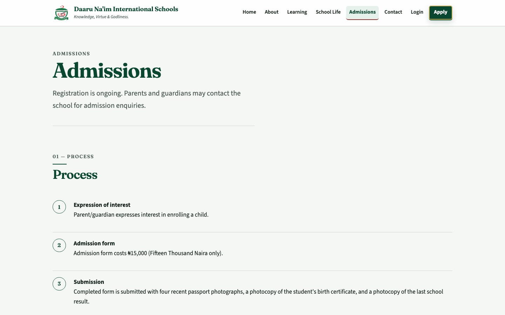

DaaruNaim School — Website & Admissions Platform
Production full-stack school website and digital admissions system built from scratch at Fingletek


Overview
DaaruNaim School is a production school website and admissions platform that combines public-facing school content with authenticated guardian and administrative workflows.
I independently built the platform from scratch as part of my work at Fingletek. Beyond a marketing site, the system manages real application state: guardian accounts, multi-child drafts, private document uploads, submission locking and receipts, administrative review, decisions, and notifications—deployed on the school’s public domain.
The Product
The live platform at danis.daarunaim.ng unifies three product surfaces:
- Public school website — school information, learning, school life, admissions guidance, and contact
- Guardian admissions portal — registration/login, multi-child applications, drafts, documents, submission, and receipts
- Administrator review workflows — application review, decisions, office-use information, internal notes, and guardian-facing notifications
The Problem / User Need
The school needed a single platform that could present public information while also supporting a structured admissions process for guardians and administrators.
The engineering challenge was to connect public website experience, guardian accounts, multi-child application drafts, private documents, submission state, receipts, administrative review, decisions, and notifications into one coherent production application—without treating admissions as a separate offline process.
What I Built
I designed and delivered the full production system:
- Responsive public website and admissions entry points
- Guardian account and multi-step application experience
- Backend APIs, persistence, and workflow state transitions
- Private document storage and access-controlled uploads
- Administrator review, decision, and notification workflows
- Containerised production deployment behind Nginx with HTTPS
My Contribution
I independently designed and built the platform from scratch as part of my work at Fingletek. My ownership covers the software engineering and product implementation:
- Independently designed and built the platform from scratch
- Implemented the public-facing frontend experience
- Developed backend APIs and application logic
- Implemented authentication and session workflows
- Implemented admissions state and workflow transitions
- Implemented persistence for guardians, applications, and review data
- Implemented private document uploads and access-controlled storage
- Implemented administrator review functionality
- Implemented notification workflows
- Integrated frontend and backend into one deployable product
- Containerised and deployed the production system
- Debugged and maintained the deployed application
This ownership is the software product. It does not claim that I operate school admissions decisions or school administration as an organisational role.
Admissions Workflow
Guardians can manage multiple child applications through a structured digital process. High-level flow:
Register / login
Create application for a child
Enter details and upload private files
Save and edit before submission
Review and confirm declaration
Finalise the application
Submission locked with receipt
Structured administrative review
Record admissions decision
Guardian-facing notification
No applicant personal data is shown on this page.
Architecture
High-level architecture of the production system:
Vite-built frontend for public, guardian, and admin experiences
Application logic, auth, workflows, and integrations
Persistent application, account, and review state
Connected production components
MinIO for private file storage · notification / email outbox for event-driven delivery state · Docker Compose for containerised services · Nginx / HTTPS for production reverse proxying.
This is a high-level architecture summary. Host names, ports, credentials, and secret configuration are intentionally omitted.
Frontend & User Experience
I implemented the responsive product UX across public and authenticated experiences, including:
- Responsive public website navigation and content presentation
- Admissions entry points and guidance pages
- Guardian account flows (registration and login)
- Multi-step application experience with draft editing
- Document upload states within the application flow
- Submission confirmation and receipt-oriented views
- Application status and notification-oriented interactions
The frontend is delivered with a Vite build pipeline. Framework-specific SPA details beyond Vite are not over-claimed here.
Backend & Data
The FastAPI backend exposes REST APIs that drive the admissions product:
- PostgreSQL persistence for guardians, applications, and review-related records
- Explicit application lifecycle and state transitions (draft vs submitted)
- Guardian-to-application relationships supporting multiple children
- Administrator review flow and decision recording
- Notification state associated with application events
Database schemas and internal identifiers remain abstract on this page.
Security & Private Documents
Production admissions data requires careful access control. The platform includes:
- Authenticated cookie-based sessions for guardian and administrative access
- CSRF protection on authenticated workflows
- Private, access-controlled document handling for supporting uploads
- HTTPS at the production edge
- Submitted applications becoming locked so later edits cannot silently alter a submitted record
No formal security certification, penetration-testing claims, or detailed cryptographic implementation details are stated here.
Admin & Notification Workflows
Administrators can review submitted applications, record decisions, manage office-use information, add internal notes, and produce guardian-facing notifications.
Application events can create notifications. Email delivery uses an outbox-style workflow so delivery state can be tracked as part of the application process. This page does not claim that every possible email channel is permanently enabled.
Production Engineering
Containerisation
Docker and Docker Compose package the application services for consistent deployment.
Edge & HTTPS
Nginx reverse proxying and HTTPS support production access to the public domain.
Data Services
PostgreSQL and MinIO provide durable application state and private object storage.
Operations
Deployment configuration, debugging, and production fixes keep the live system maintainable.
Technologies
Outcome
Production Platform
Delivered a live school website and digital admissions platform on the public domain.
Unified Experience
Connected public content with authenticated guardian and administrative workflows.
Digitised Applications
Enabled guardians to prepare, draft, and submit multi-child applications online.
Structured Review
Provided administrators with consistent review, decision, and notification workflows.
Private Documents
Implemented access-controlled handling of supporting application documents.
Maintained Delivery
Deployed and maintained the system in production through debugging and iterative fixes.
No student counts, application volumes, conversion rates, uptime, or performance metrics are claimed here.